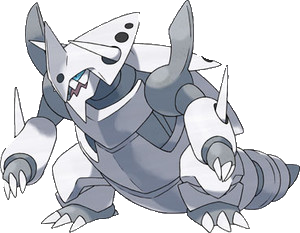
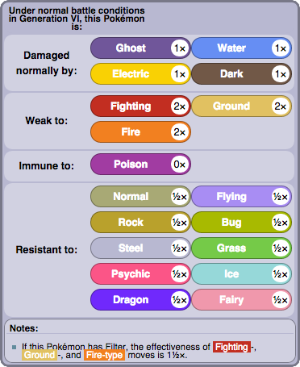
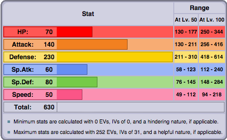
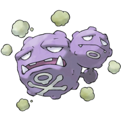
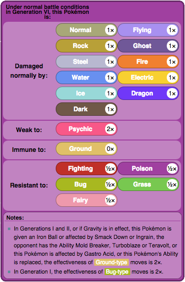
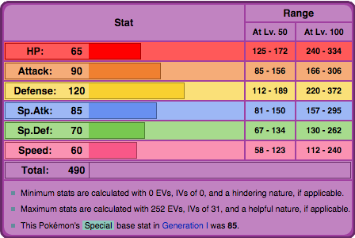
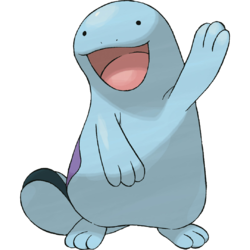
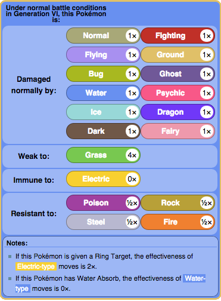
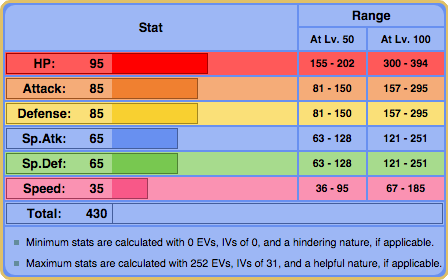

Physical Tanks
Mega Aggron
Mega Aggron has one of the highest defenses in the entire game. Not only is it bulky in Defense, but it is also a very powerful attacker. Because of its already high Defense, it's another option to raise EVs in its Sp. Defense to make it a neutral wall. The EV Spread should definitely be in its HP, and some invested in Attack, Defense, and Sp. Defense. With its ability Filter, it allows Mega Aggron to absorb its weaknesses better.
 | Move 1: Heavy Slam/Iron Head | Move 2: Curse/Aqua Tail/Ice Punch |
| Move 3: Earthquake/Stone Edge | Move 4: Curse/Aqua Tail/Ice Punch |
Weezing
Weezing is a relatively popular choice as a physical tank. Not only does it have only one weakness because of Levitate, but it can still absorb hits very well. Weezing should hold a Black Sludge to function like Leftovers. EVs should be invested in Defense because it's still not the best, so it is purposely weaker against special attacks. HP should also be invested, but Sp. Attack should not be as much.
 | Move 1: Sludge Bomb | Move 2: Flamethrower |
| Move 3: Pain Split | Move 4: Will-O-Wisp |
Quagsire
Quagsire is not as popular as other choices, but like Weezing, has only one weakness. Unfortunately, since Grass is 4x effective, Quagire is pretty much doomed against it. It should hold Leftovers to help with health, and EVs should be invested in HP, Attack, and Defense. Another option for Quagsire is for it to be a neutral defense wall, in which case Sp. Defense needs to be raised. Impish is its best nature, although Relaxed is another option because of its already small Speed.
 | Move 1: Waterfall/Aqua Tail | Move 2: Eathquake/Stone Edge |
| Move 3: Curse | Move 4: Recover |